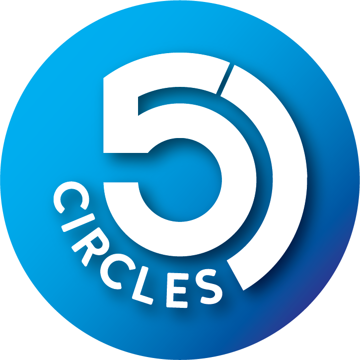

5 Circles Pvt Ltd
Changing Phase of Investment
Certificate of Completion
AI Trading Course · {{level_title}}
{{learner_name}}
has completed all requirements of the {{level_title}} level of the 5 Circles AI Trading Course as part of cohort {{cohort_name}}, covering {{session_count}} sessions, the weekly and final examinations, the practice artefact ladder and the Friday review discipline. Result band: {{band}}.